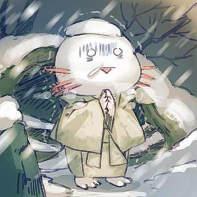

天野 沙紀
일본의 페미니스트 작가. 디폴트 여성들과 미러링 만화,일러스트를 주로 그린다.
Saki Amano 작가의 트위터
슈트여성&바니보이
뭘 벗겠다고?
사람마다 탈코한 모습은 다르다.
왠지, 지금의, 만화, 탈코?
SUGOIDEKAI
인기있는 남성의 최신 트렌드 패션
타마타마쨩
내일부터 전국 남성 간호사의 지정복입니다.
전철에서 아무리해도 다리를 모을 수 없는 거랄쨩
부랄자를 입고 지금 당장 미남이 되자!
럭키스케베 체질의 남자&덤
일본남자는 역시 흑발 청초계가 최고!
부적절한 광고를 숨길...수 없습니다!(번역)
남자 아이돌은 전국 남자들의 꿈과 모범이기에 좀 더 주체적 Kawaii&섹시를 전면에 내세웠으면 합니다.
야마토 남데시코
여성과 남성의 속옷 차이
휴식. 부랄자 말고 다른것도 그립니다.
휴식. 안경씨.
이런게 편의점에 있다니 최악, 역시 젠더불평등 121위의 헬재팬이야. 남성에게 인권은 없는거야???